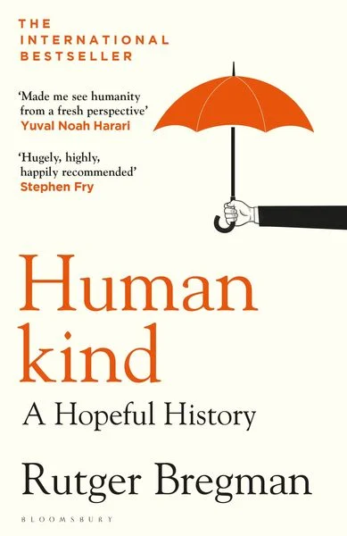
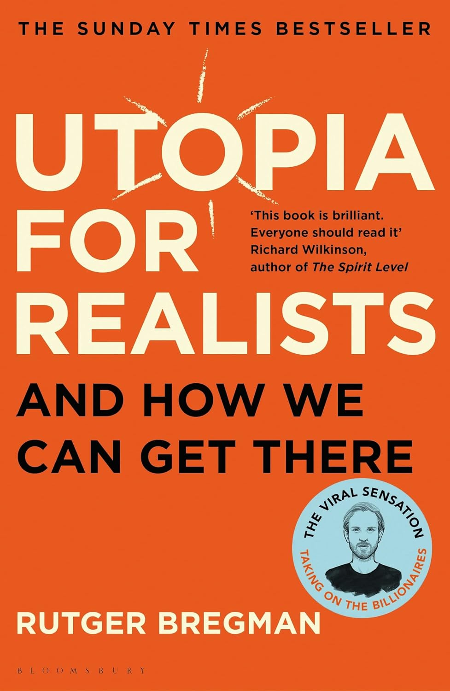
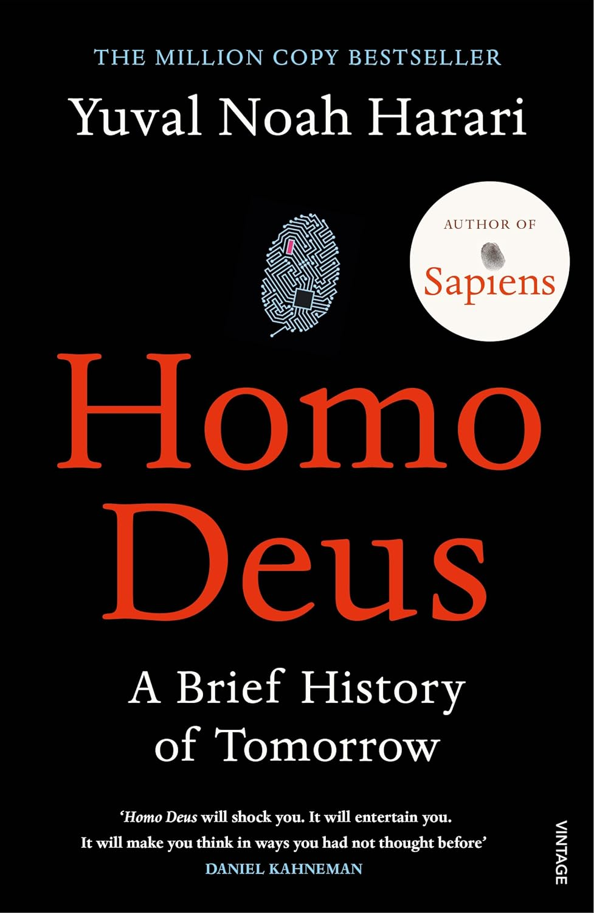
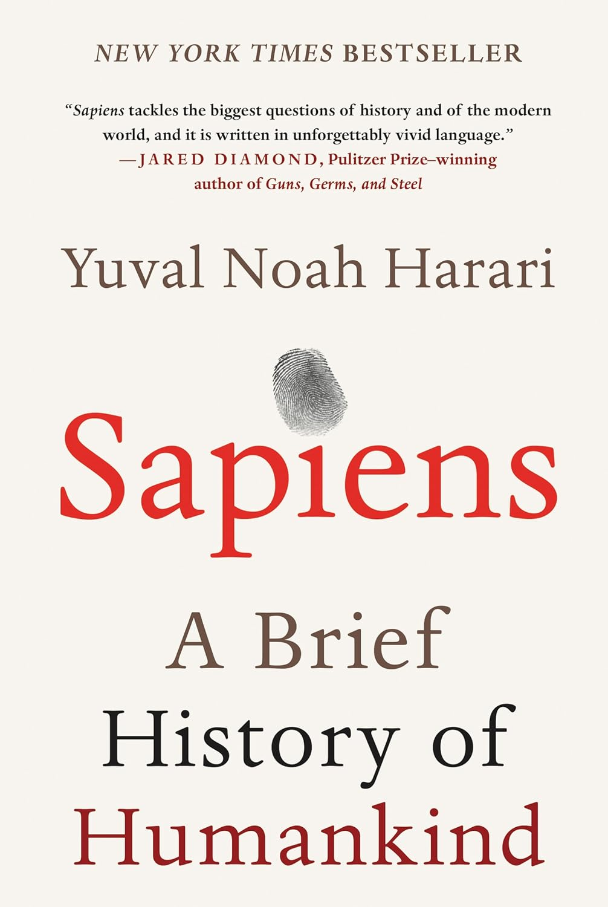

'Humankind' challenges conventional wisdom and unveils the extraordinary potential for kindness within us all.
- The Reader Magazine
AUDIOBOOKS
These audiobooks have accompanied me in recent years.

★
Humankind
If there is one belief that has united the left and the right, psychologists and philosophers, ancient thinkers and modern ones, it is the tacit assumption that humans are bad. But what if it isn't true? By providing a new historical perspective on the last 200,000 years of human history, Rutger Bregman sets out to prove that we are in fact hard-wired for kindness, geared toward cooperation rather than competition, and more inclined to trust rather than distrust one another.

★
Utopia For Realists
Rutger Bregman is one of Europe’s most prominent young thinkers. In Utopia for Realists, he shows that we can construct a society with visionary ideas that are, in fact, wholly implementable. Every milestone of civilisation – from the end of slavery to the beginning of democracy – was once considered a utopian fantasy. New utopian ideas such as universal basic income and a fifteen-hour work week can become reality in our lifetime.★
Lessons In Chemistry
Lessons in Chemistry is a novel set in the 1960's and follows Elisabeth Zott, a chemist in an all-male Research Institute in California. After a couple of turning points in her life, she finds herself a single mom and the reluctant TV host of a cooking show where she combines her cooking lessons with fundamental lessons in science. Moreover, she introduces her audience to feminist concepts and encourages her fans to challenge the status quo.

★
Homo Deus
Homo Deus: A Brief History of Tomorrow examines what might happen to the world when old myths are coupled with new godlike technologies, such as artificial intelligence and genetic engineering. Humans conquered the world thanks to their unique ability to believe in collective myths about gods, money, equality and freedom. In Homo Deus, Prof. Harari looks to the future and explores how global power might shift, as the principal force of evolution – natural selection – is replaced by intelligent design.

★
Sapiens
Homo sapiens rules the world because it is the only animal that can believe in things that exist purely in its own imagination, such as gods, states, money, and human rights. Starting from this provocative idea, Sapiens goes on to retell the history of our species from a completely fresh perspective. It takes us on a ride through our entire human history, from its evolutionary roots to the age of capitalism and genetic engineering, to uncover why we are the way we are.★